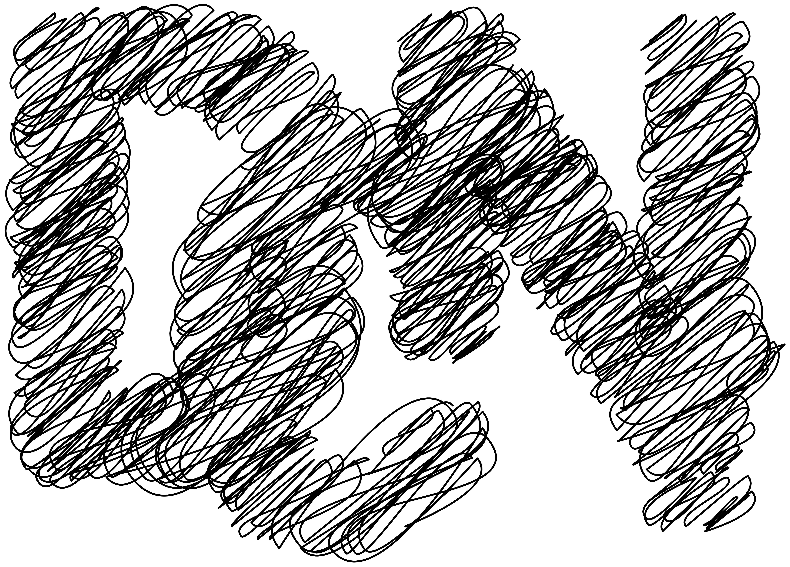

Équipée de commandes mécaniques et numériques, l'Anarchiveuse fait jouer les archives en croisant les époques et les thématiques.
L'anarchiveuse propose d'explorer, de manipuler, de superposer, de ralentir, de décaler, d'accidenter des images-archives sur un fichier sonore et de réactiver leur visionnage passé et actuel. Installée dans des lieux passants, l'anarchiveuse invite à l'exploration et au jeu audiovisuel entre archives, technologies et public.
Juin 2026
Juillet 2026
Juillet 2026
Août 2026
Sept. 2026
Oct. 2027
Nov. 2026
Déc. 2026
Janv. 2027
Fév. 2027
Imaginé par
